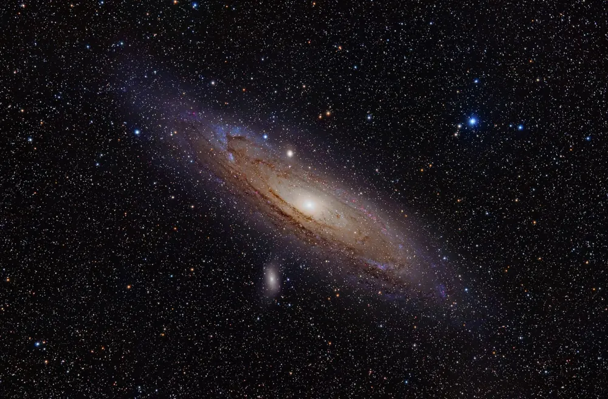
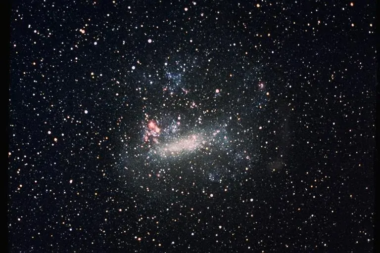

← GalaxiesGalaxiesGalaxiasGaláxiasGalaxiesالمجرات
Galaxies you can seeजो galaxies आप देख सकते हैंGalaxias que puedes verGaláxias que você pode verDes galaxies visiblesمجرات يمكنك رؤيتها
You need no telescope for the first three.पहली तीन के लिए telescope नहीं चाहिए।Las tres primeras no necesitan telescopio.Você não precisa de telescópio para as três primeiras.Pas besoin de télescope pour les trois premières.لا تحتاج إلى مقراب لأول ثلاث.

📷 Adam Evans · CC BY 2.0

📷 NASA/Ames Research Center · Public domain
| GalaxyGalaxyGalaxiaGaláxiaGalaxieالمجرة | WhereकहाँDóndeOndeOùأين | Needsज़रूरतNecesitasPrecisa deIl fautتحتاج إلى |
|---|---|---|
| The Milky Way bandआकाशगंगा की पट्टीLa banda de la Vía LácteaA faixa da Via LácteaLa bande de la Voie lactéeشريط درب التبانة | Anywhere dark, best in summerकहीं भी अँधेरे में, गर्मियों में सबसे अच्छीCualquier lugar oscuro, mejor en veranoQualquer lugar escuro, melhor no verãoN’importe où dans le noir, mieux en étéأي مكان مظلم، الأفضل في الصيف | EyesआँखेंOjosOlhosLes yeuxالعينان |
| Andromeda (M31)Andromeda (M31)Andrómeda (M31)Andrômeda (M31)Andromède (M31)المرأة المسلسلة (M31) | Northern sky, autumn eveningsउत्तरी आसमान, शरद की शामेंCielo norte, tardes de otoñoCéu norte, noites de outonoCiel nord, soirs d’automneالسماء الشمالية، مساءات الخريف | Eyes, better with binocularsआँखें, दूरबीन से बेहतरOjos, mejor con prismáticosOlhos, melhor com binóculoLes yeux, mieux avec des jumellesالعينان، والأفضل بمنظار |
| Magellanic CloudsMagellanic CloudsNubes de MagallanesNuvens de MagalhãesNuages de Magellanسحابتا ماجلان | Only from the southern hemisphere or near the equatorसिर्फ़ दक्षिणी गोलार्ध या भूमध्य रेखा के पास सेSolo desde el hemisferio sur o cerca del ecuadorSó do hemisfério sul ou perto do equadorSeulement depuis l’hémisphère sud ou près de l’équateurفقط من نصف الكرة الجنوبي أو قرب خط الاستواء | EyesआँखेंOjosOlhosLes yeuxالعينان |
| Triangulum (M33)Triangulum (M33)Triángulo (M33)Triângulo (M33)Triangle (M33)المثلث (M33) | Northern sky, near Andromedaउत्तरी आसमान, Andromeda के पासCielo norte, cerca de AndrómedaCéu norte, perto de AndrômedaCiel nord, près d’Andromèdeالسماء الشمالية، قرب المرأة المسلسلة | Binoculars, very dark skyदूरबीन, बहुत अँधेरा आसमानPrismáticos, cielo muy oscuroBinóculo, céu muito escuroJumelles, ciel très sombreمنظار، سماء شديدة الظلام |
| Bode’s Galaxy (M81)Bode’s Galaxy (M81)Galaxia de Bode (M81)Galáxia de Bode (M81)Galaxie de Bode (M81)مجرة بودي (M81) | Near the Big Dipperसप्तर्षि के पासCerca de la Osa MayorPerto da Ursa MaiorPrès de la Grande Ourseقرب الدب الأكبر | Small telescopeछोटा telescopeTelescopio pequeñoTelescópio pequenoPetit télescopeمقراب صغير |
TipsसुझावConsejosDicasConseilsنصائح
Go darkअँधेरे में जाएँBusca oscuridadProcure o escuroCherchez le noirابحث عن الظلام
City lights wash out faint galaxies. Move away from them and avoid the Moon.शहर की रोशनी धुँधली galaxies मिटा देती है। उससे दूर जाइए और चाँद की रात से बचिए।
Wait 20 minutes20 मिनट रुकिएEspera 20 minutosEspere 20 minutosAttendez 20 minutesانتظر 20 دقيقة
Eyes need that long to adjust. Do not look at a phone screen, or use a red light.आँखों को ढलने में इतना समय लगता है। फ़ोन की screen न देखें, या लाल रोशनी इस्तेमाल करें।
Look beside itकिनारे से देखिएMira de reojoOlhe de ladoRegardez à côtéانظر إلى جانبها
Look slightly to the side of the spot. The edge of the eye is more sensitive to faint light.उस जगह से थोड़ा बग़ल में देखिए। आँख का किनारा हल्की रोशनी के लिए ज़्यादा संवेदनशील है।